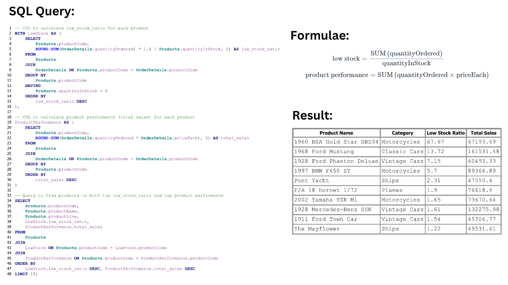
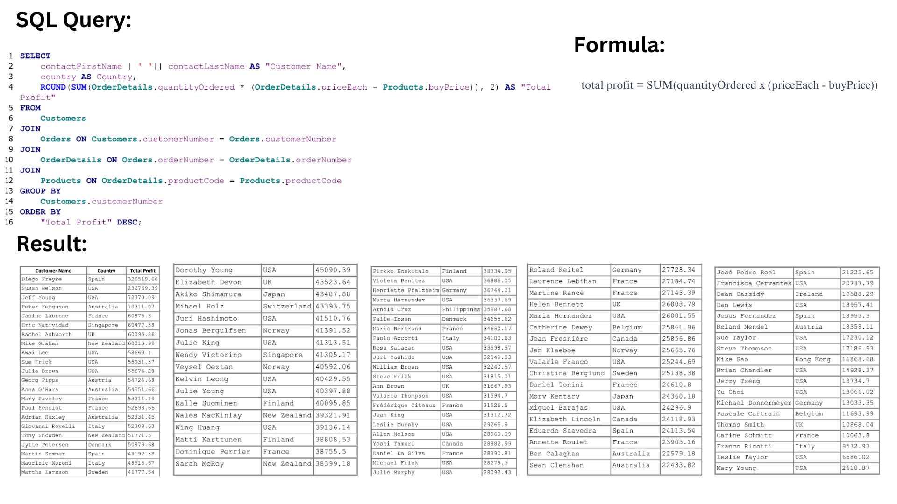

Your guide to key business questions and actionable insights
This analysis helps optimize inventory levels to prevent overstocking or running out of stock.
Explanation: By calculating the low stock ratio and product performance (sales), we prioritize products that need immediate restocking or de-prioritization based on demand and stock levels.
Understanding customer behavior helps tailor personalized strategies for retention and engagement.
Explanation: Customers are segmented into VIPs and less-engaged groups based on their lifetime value, enabling targeted campaigns for each category.
Customer acquisition cost is determined by evaluating the average customer lifetime value (CLV).
Explanation: The CLV analysis provides insights into how much budget can be allocated for acquiring new customers while maintaining profitability.